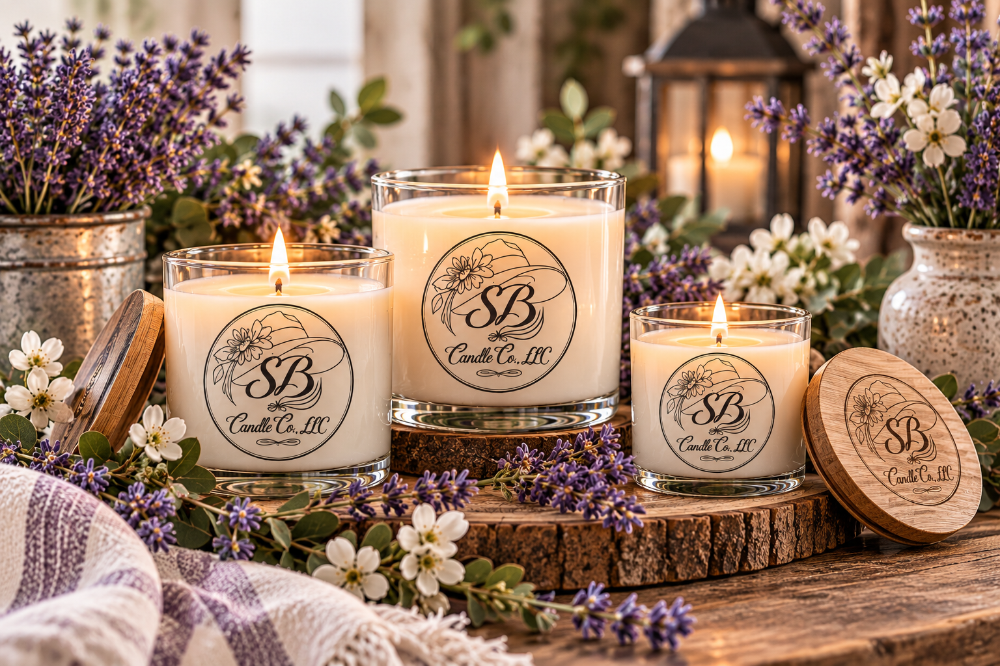

01
Hand Poured
Our candles are crafted in small batches with attention given to the details that make each collection special.
THE SASSY BELLE STORY
A little fragrance can change the feeling of a room, bring back a memory, or make an ordinary moment feel special.

WELCOME TO SASSY BELLE
Sassy Belle Candle Co., LLC is an artisan candle and home fragrance company centered around beautifully crafted products, memorable fragrances, and the simple joy of making a space feel like home.
Each collection is created with the idea that fragrance should be more than something you smell. It should become part of the atmosphere, the memory, and the moments that make a house feel personal.
From hand poured candles to Cupcake Minis and home fragrance, Sassy Belle brings together craftsmanship, creativity, and Southern inspired charm.
OUR APPROACH
We believe the details matter.
Our candles are crafted in small batches with attention given to the details that make each collection special.
Fragrance is at the heart of what we do. Every scent is selected to help create an atmosphere worth remembering.
As a small business, we believe there is something meaningful about creating products with care and sharing them with others.
WOMEN OWNED
Sassy Belle Candle Co., LLC represents the creativity, determination, and care that can grow from a small business idea into something shared with a community.
WHAT MATTERS TO US
Thoughtful products made with attention to the experience they create.
Fragrance, design, and presentation should have personality.
Small businesses grow through relationships, support, and the people who believe in them.
Warm, welcoming, feminine, and just a little bit sassy.
SASSY BELLE CANDLE CO., LLC
Whether you're creating a cozy evening, refreshing your home, choosing a gift, or simply treating yourself, we hope Sassy Belle becomes part of a moment you'll remember.
Explore the Collection